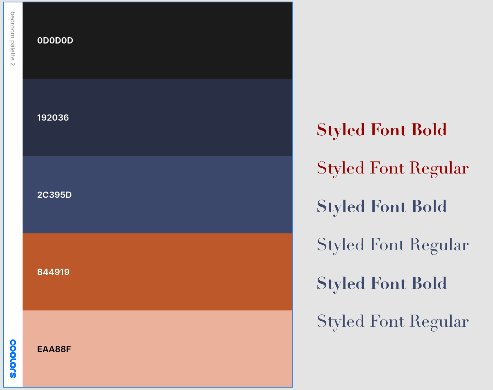
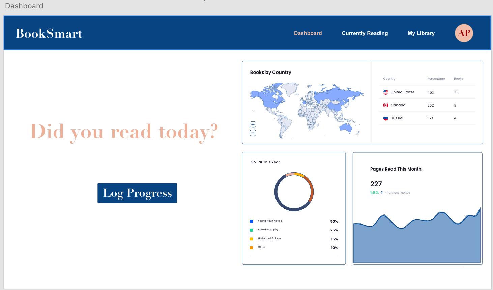
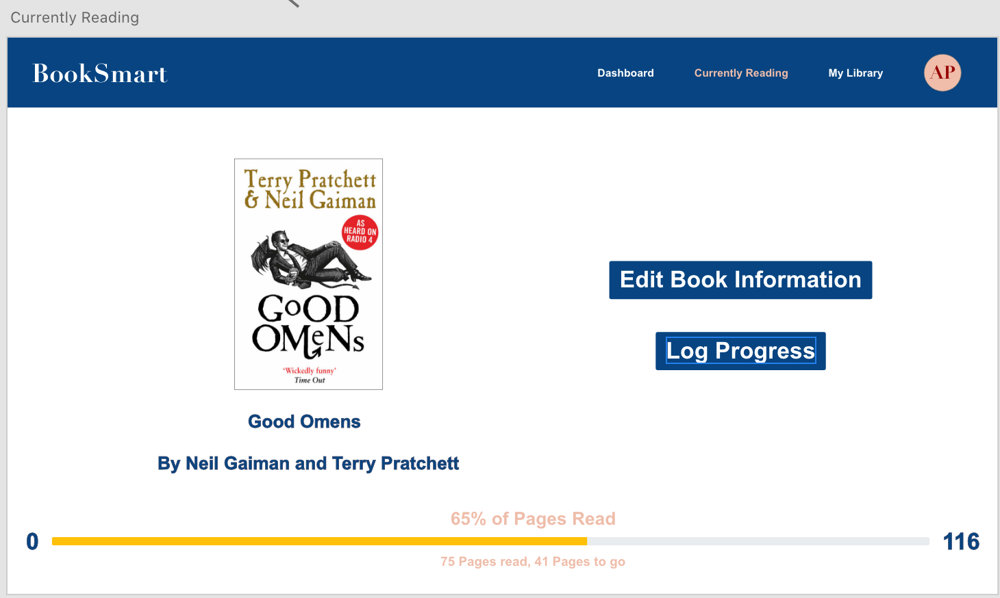
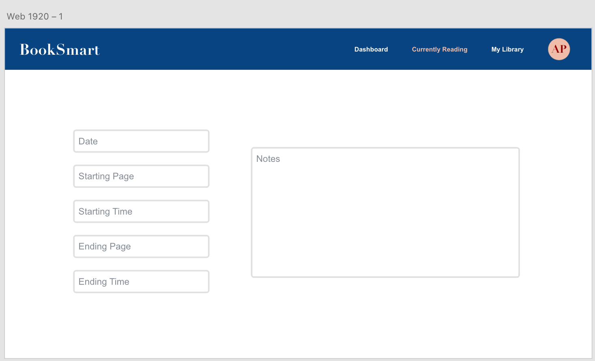
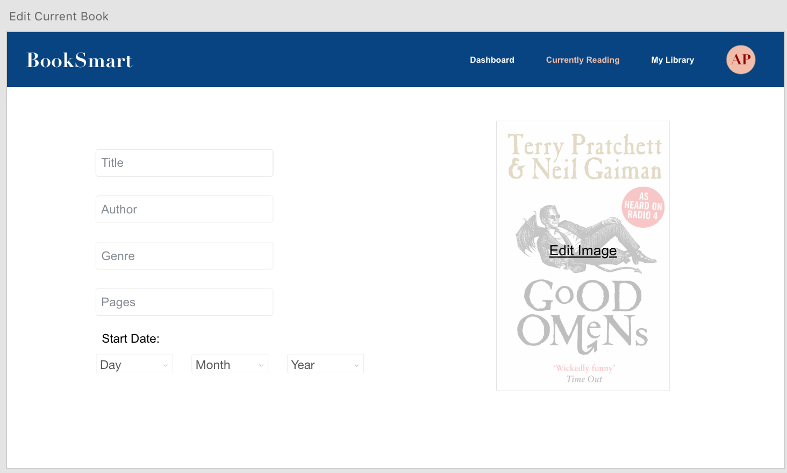
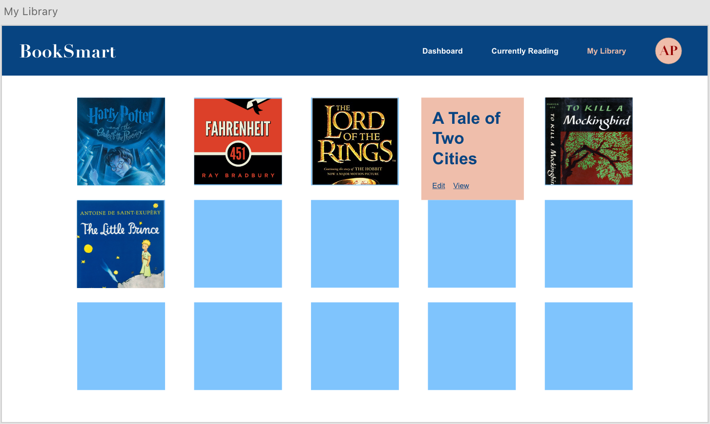
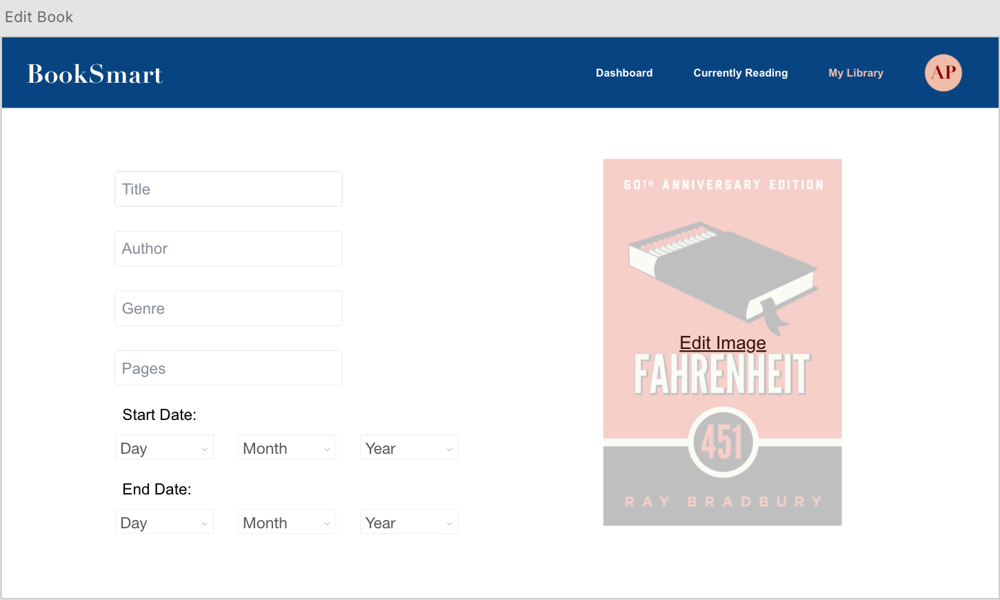
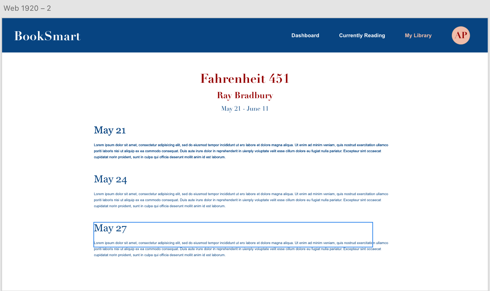

This is a book lover's website. It is meant to be used for personal purposes for now, but could be expanded for multi-user use.
Below is the color and text theme I used.
When you first navigate to the page, you see the landing page, as drawn below in Adobe XD.
You can look at your dashboard upon logging in (log in would be additional build out) This is where you can find statistics about your past reading history.
You may then navigate to the currently reading page to either edit your current book's information or log pages/time spent reading.
From this page you can either log time at the following page
Or you can edit the current book's information
You can also look back on books you've already read at the library page.
From this page you can either edit books in the Library or view your notes from when you read them. The following is the edit page:
And this is the reading past notes page:
